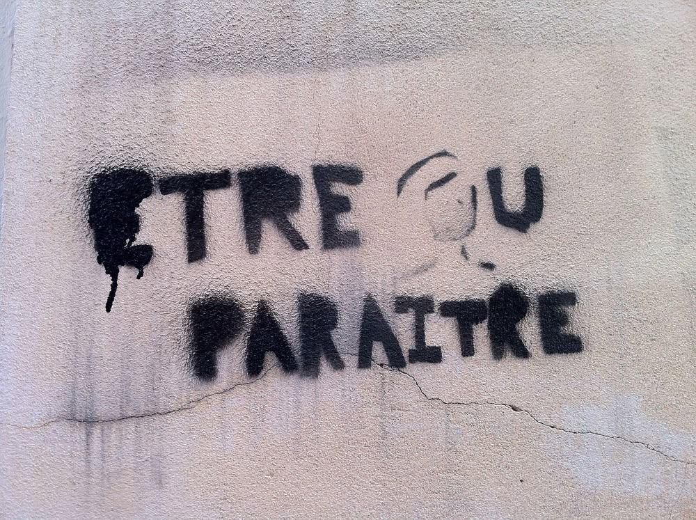

Être ou paraître
On m’a dit :
« Souris. Sois fort. Sois lisse. »
Alors j’ai mis mon masque,
celui qui brille sous les projecteurs,
mais s’effrite dans le noir.
J’ai mis des mots bien rangés
sur des silences en désordre.
J’ai poli ma voix,
j’ai lissé mes gestes,
jusqu’à ne plus savoir
si c’était moi… ou mon reflet.
Être, c’est rugueux.
C’est trembler, rater, chercher.
C’est dire :
« Je ne sais pas. »
C’est oser tomber
sans faire semblant de voler.
Mais paraître,
c’est facile à vendre.
Un joli mensonge
a plus de succès
qu’une vérité sans maquillage.
Alors je vacille,
entre façade et fondation,
entre l’image qu’on attend
et la personne que je tais.
Et si je choisissais
de n’être que moi,
simplement,
entièrement —
même si ça dérange,
même si ça déçoit ?
Peut-être qu’alors,
je cesserais de vivre
en demi-miroirs
et je pourrais respirer
à visage découvert.
Djamel Metref
At Yenni le 23 juin 2025

← Tous les poèmes